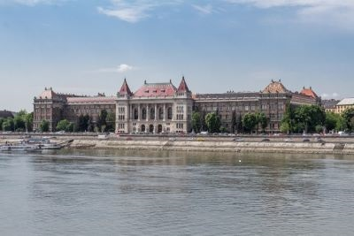
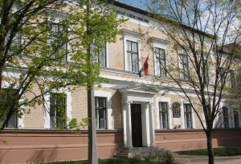

Röviden tanulmányaimról:
Jelenleg a Budapesti Műszaki- és Gazdaságtudományi Egyetem hallgatója vagyok.

A Budapesti Műszaki és Gazdaságtudományi Egyetem (rövidítve: BME vagy Műegyetem) Közép-Európa és Magyarország egyik legnagyobb presztízzsel rendelkező műszaki egyeteme, 1782-es alapításával a világ első műszaki egyeteme (pontosabban az első olyan intézmény, amely egyetemi keretek között, egyetemi struktúrában folytatott mérnökképzést). Nyolc karával és több mint 24 000 hallgatójával Magyarország egyik legnagyobb egyeteme.
Korábban Szolnokon a Verseghy Ferenc Gimnáziumban tanultam.

A szolnoki Verseghy Ferenc Gimnázium Jász-Nagykun-Szolnok megye egyik legrégibb, nagy hagyományokkal rendelkező gimnáziuma. Az iskolát 1831-ben alapították, s 1922 óta viseli a város híres szülöttének, a nyelvújító, költő Verseghy Ferencnek a nevét. Patinás épülete, amelyet 1888-ban építettek, a város legszebb pontján, a Tisza-parton áll a Szigligeti Színház tőszomszédságában.
Általános iskolai éveimet Szolnokon a Kassai Úti Magyar-Angol Kéttanítási Nyelvű Általános Iskolában töltöttem.